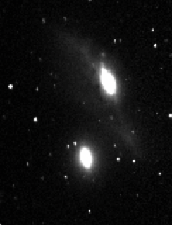
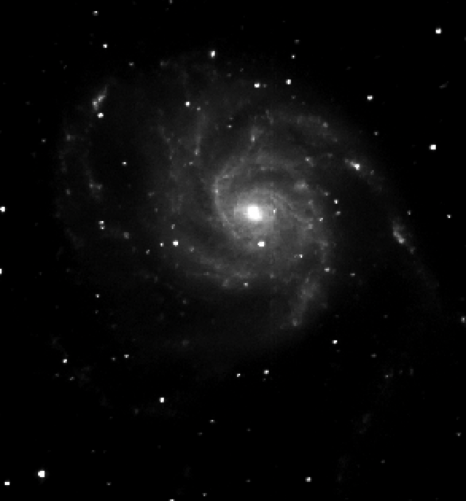
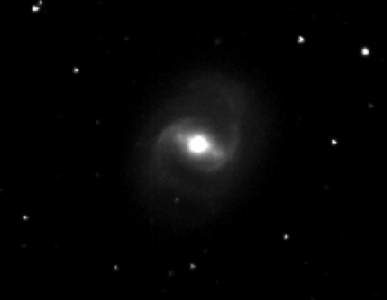
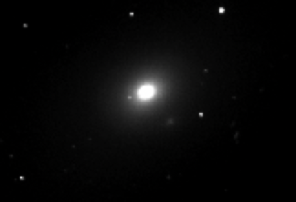
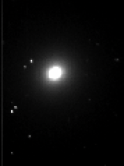

Five galaxies were chosen to represent the different types of galaxies used in the color gradient analysis:
NGC4435 and NGC4438 - Barred Lenticular (SB0, left) and Target (right)
M101 - Grand Design Spiral (Sc)
M91 - Barred Spiral (SBb)
M86 - Elliptical (E3)
M84 - Lenticular (S0)
Originally, I wanted to focus on the Markarian Chain, but the spiral galaxies in the chain are all edge-on. I found that it would be best for my analysis for the galaxies to be face-on. This is the reason I used M101 and M91. All 6 of the galaxies are in the Virgo Cluster.
All images were taken by me.
| Mirror Diameter | .8 m |
| CCD Dimensions | 2080x2048 |
| Binning | 2x2 |
| Bits per pixel | 16 |
| Gain | 1.60 |
| Read Noise | 5.87 |
| Airmass | 13.37 |
The images were taken remotely using the .8 m telescope at McDonald Observatory.
There were a total of 51 images taken. However, not all frames were used for analysis due to pointing glitches, being out of focus, cosmic rays, and over saturation. All six objects had 3 exposures taken in each of the B, V, R, and Hα filters at varying exposure times.
M101 and M91 were captured on their own. M86, M84, NGC4435, and NGC4438 were all captured in one frame as they are all apart of the Markarian Chain.
A bias image was created from 10 exposures, and a flat, also created from 10 exposures, was created for each filter. The composite bias and flats needed to be converted to 2x2 binning as they were taken with 1x1 binning. This was done using blkavg on IRAF.
Each image was flat-fielded, bias-subtracted, and trimmed using IRAF. The median and final image for each object in all four filters was compiled and edited using python. The images were aligned and scaled for exposure time using a python program my professor made.